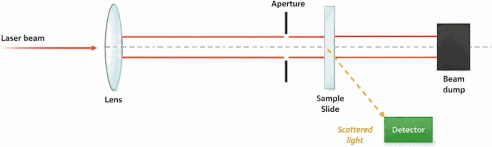

Sample in, answer out — in about 10 minutes
A complete test workflow from collection to cloud, with no amplification, no dedicated lab, and no specialized technician.
Five steps to a result
Collect sample
Take a sample directly from the food product.
Insert cartridge
Side-load the single-use test cartridge.
Laser detection
Mie-scattering optics analyze the sample.
Result on screen
A clear detected / not-detected readout.
Data to cloud QA
Structured data uploads automatically.
Designed to integrate with existing QA systems including SAP, Oracle, Infor, Safefood 360°, ComplianceMetrix and FoodLogiQ.
How Mie-scattering detection works
Antibody-coated microspheres bind to target bacteria in a micro-fluidic cartridge. A laser passes through the sample, and the pattern of scattered light reveals whether pathogens are present — read directly, with no amplification.

Swipe to see the full diagram →
No sample amplification
Results are read directly from the sample — no time-consuming amplification step.
No dedicated lab
Runs at the point of need in the field — no benchtop instruments required.
No specialized technician
An intuitive, guided workflow anyone on the line can run with confidence.
Faster and lower cost — without the amplification bottleneck
Every competing method requires a sample amplification step that adds hours or days. RapidBio doesn't — delivering a screening result in about ten minutes.
Longer time to result →
The key difference: established methods from BioMérieux, Thermo Fisher, Eurofins and Neogen all depend on an amplification or culture step. RapidBio removes it entirely — the basis for both its speed and its lower cost per test.
Want the full technical story?
The investor deck covers the science, validation, IP position and roadmap in detail.
Request the deck